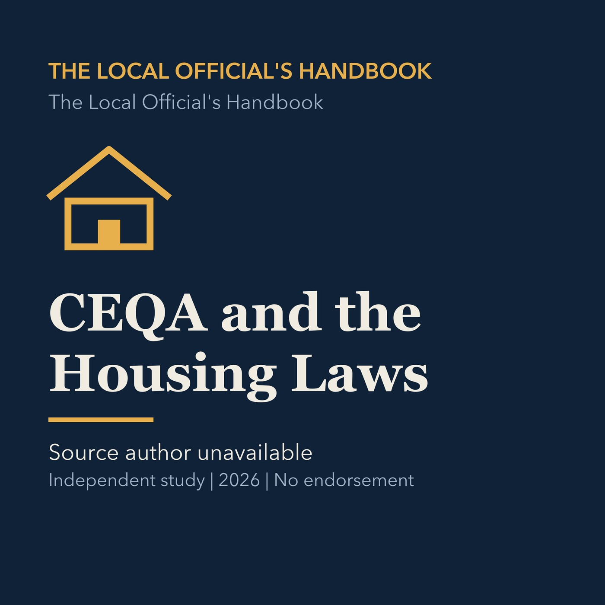

EPISODE 05
CEQA and the Housing Laws
Explains how environmental review and recent housing laws constrain planning decisions.

- Stable GUID
38f77483-62d2-5c92-8c07-4dad9cbbdf77- Release
- local-officials-handbook-v2026.2
- SHA-256
1e3ecd91e537ed2ff74371a34c756b1c7611f714fe0f9cef5e5da15865c63c8c